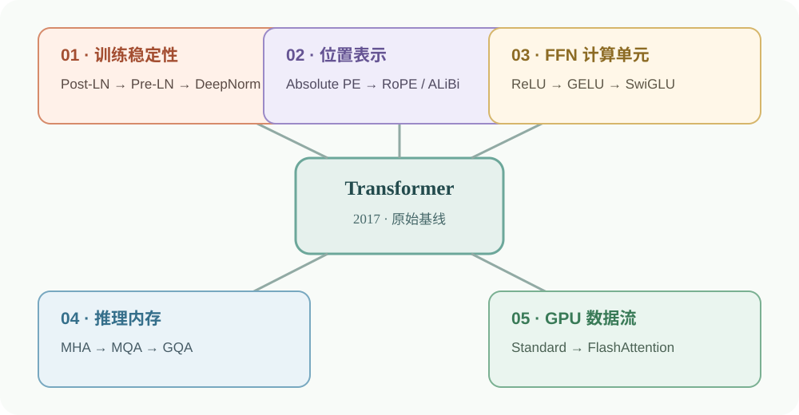
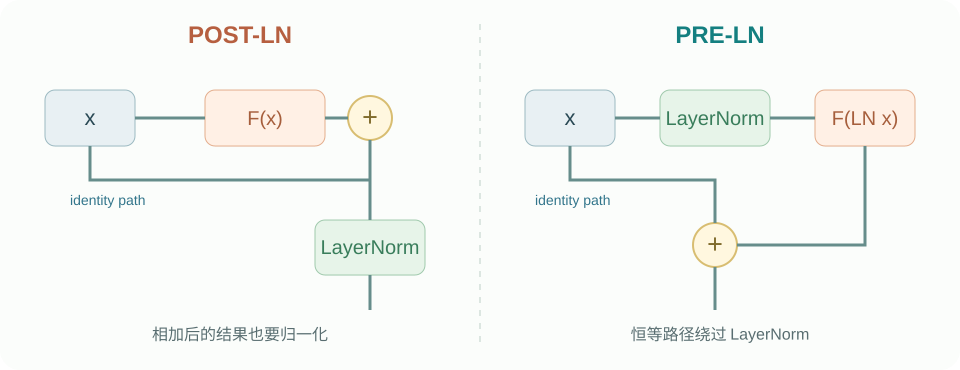
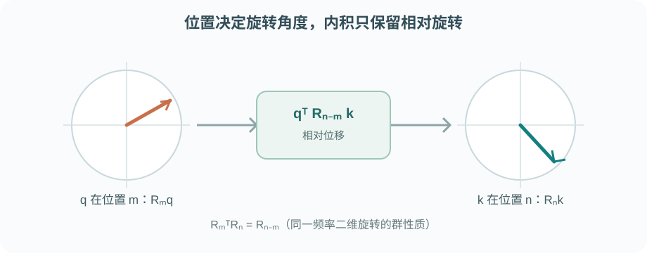
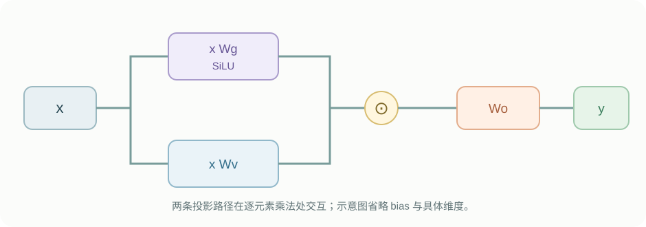
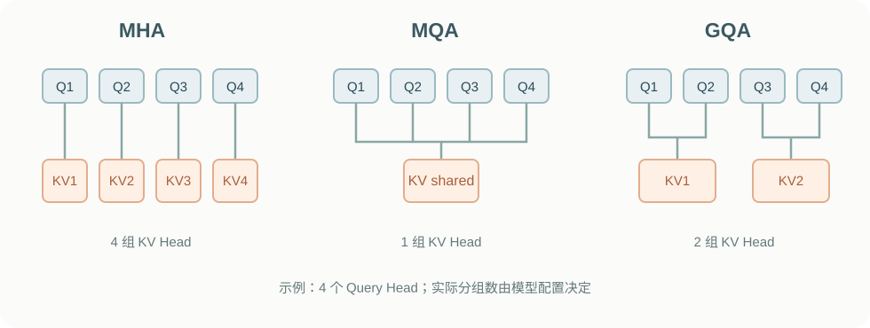
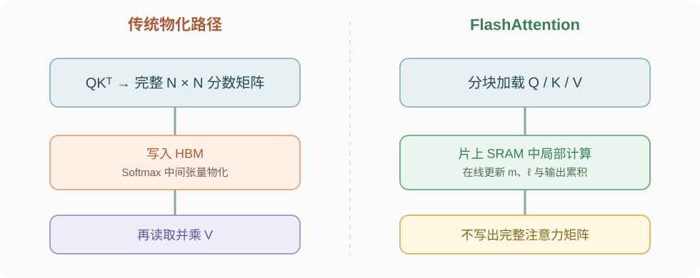

Transformer Design Evolution
从原始架构到现代 LLM
为什么一个成功的架构还会不断改变？沿着训练稳定性、位置表示、特征变换、推理内存与 GPU 数据搬运五条主线，追踪 Transformer 的设计如何在规模化过程中演进。
01 · 一个成功的架构，为什么还需要被反复改造？
Transformer 的故事不是“原论文错了，后来的人修好了”。更准确地说：原始设计在当时的任务、模型规模和硬件条件下非常有效；当训练变深、上下文变长、生成变成在线服务，原先不突出的代价才成为新的主导瓶颈。
2017 年的 Attention Is All You Need 提出完全基于 Attention 的 Encoder–Decoder 序列转换架构。论文使用六层 Encoder 与 Decoder、Multi-Head Attention、位置编码、逐位置 FFN 和 Post-LN 残差子层。它的贡献不是发明了 Attention，而是证明了不依赖 RNN/CNN 的序列转换架构可以在机器翻译任务上取得强结果，并更容易并行训练。
后来出现的改进，通常不是推翻整个 Transformer，而是针对一个具体约束改变某个组件。要避免把这些变化混成“新一代 Transformer”一个概念：有些改变训练动力学，有些改变表示方式，有些只改变 kernel 的执行路径。

02 · 先把“改进”分成五种不同问题
一个实用的判断方式是问：改动发生在模型的数学函数、训练时的参数更新过程，还是实现同一数学函数的执行算法？例如 FlashAttention 属于第三类：它计算精确 Attention，但通过 IO-aware tiling 改变执行方式；GQA 则改变了 K/V 投影结构，因而也改变了模型函数和缓存布局。
03 · 训练稳定性：Post-LN、Pre-LN 与 DeepNorm
原始 Transformer 对每个子层使用 Post-LN：
Pre-LN 将归一化移到变换分支内部：

从 Jacobian 看差异
令 (J_F) 表示子层变换的 Jacobian，(J_{LN}) 表示 LayerNorm 的 Jacobian。按链式法则：
因此 Pre-LN 的反向路径包含显式的恒等项 (I)，梯度可以沿残差流直接传播。Post-LN 则在残差加法之后仍经过归一化 Jacobian。注意，这并不意味着 Post-LN 在所有层、所有训练阶段必然梯度消失；关键是初始化附近参数梯度的尺度分布及其对学习率的敏感性。
Xiong 等人使用 Mean Field Theory 分析初始化时的梯度行为。其结论是：在论文所采用的假设与简化模型下，Post-LN 靠近输出层的参数期望梯度较大，直接使用较大学习率可能导致不稳定；Pre-LN 的初始化梯度行为更温和，因此在他们的实验设置中可以去掉 warm-up 并取得可比结果。论文 Theorem 1 对比的最后 FFN 参数梯度量级分别为 (O(d\sqrt{\ln d})) 与 (O(d\sqrt{\ln d/L}))，其中 (d) 是隐藏维度，(L) 是层数。这是特定理论设置下的上界分析，不是任意训练配置下的普适精确梯度公式。
为什么又出现 DeepNorm？
DeepNorm / DeepNet 不是简单回到原始 Post-LN，而是通过残差分支缩放与配套初始化控制模型更新，目标是在深层扩展时兼顾 Post-LN 的一些性能特性与稳定训练。论文报告了最高 1,000 层的实验，但这应被理解为该论文方法和实验配置下的结果，而不是所有模型都能直接套用的通用深度保证。
RMSNorm 则解决另一类问题：它去掉 LayerNorm 的均值中心化，只保留基于均方根的缩放。它与 Pre-LN/Post-LN 是不同维度的选择，可以组合，而不是取代残差归一化顺序。
04 · 位置表示：从输入相加到相对位移进入注意力
原始 Transformer 没有循环或卷积结构，因此需要向模型注入序列顺序。Vaswani 等人将固定正弦位置编码加到 Token Embedding：
不能把它说成“绝对位置编码完全没有相对位置信息”。正弦和余弦的三角恒等式允许线性关系编码位移；真正的差异在于，位置向量先与内容表示相加，再由投影后的 Q/K 学习利用这些线索。RoPE 则直接对 Query 和 Key 的二维通道对施加与位置相关的旋转，使点积显式依赖相对位移。

RoPE 同时编码绝对位置并在 Attention 内积中产生相对位置依赖。但它并不自动解决任意长度外推：频率设计、训练长度与测试长度差异、注意力分布变化仍然需要专门处理。位置插值、NTK-aware scaling 等属于后续长上下文适配策略，不能与 RoPE 原始定义混为一谈。
05 · FFN：从 ReLU 到门控特征变换
原始 Transformer 的 Position-wise FFN 对每个 Token 独立应用两层线性变换，中间使用 ReLU：
ReLU 的负半轴导数为零，但把后续激活函数演进全部归结为 Dying ReLU 并不准确。GELU 提供平滑的非线性；GLU 家族则引入两个投影分支的逐元素乘法，让一条分支调制另一条分支的特征。Shazeer 对 Transformer FFN 中多种 GLU 变体做了实验，发现部分门控变体优于当时常用的 ReLU/GELU 配置。

实际 Transformer FFN 还会使用输出投影 (W_o)，并调整中间维度以控制参数量和计算量。比较激活函数时，必须同时报告模型宽度、参数预算、训练配方和数据设置；否则“更好”可能来自容量变化而不是激活函数本身。
深入阅读：Understanding SwiGLU · GLU Variants Improve Transformer
06 · Attention Head：从 MHA 到 MQA / GQA
在自回归解码中，历史 Token 的 Key 和 Value 通常被缓存，避免每生成一个新 Token 都重新计算全部历史表示。MHA 为每个 Query Head 配置独立的 K/V Head，因此缓存容量随 K/V Head 数量增长。

若使用相同的层数、Batch、缓存长度和每头维度，KV Cache 元素数量可近似写成：
其中 2 表示 Key 与 Value；(L) 为层数，(B) 为批次，(T) 为缓存长度，(H_{KV}) 为 K/V Head 数，(d_h) 为每头维度。MHA 通常 (H_{KV}=H_Q)，MQA 为 1，GQA 则介于二者之间。这个表达式统计缓存元素，不包含量化、分页元数据、对齐与框架额外开销。
Ainslie 等人的 GQA 工作提出从 MHA checkpoint 转换并 uptrain 到 MQA/GQA 的方法，论文报告约 5% 原始预训练计算量的 uptraining 配方，并在其评测中获得接近 MHA 的质量与接近 MQA 的推理速度。这个结论属于该论文的模型和实验配置，不应外推成所有架构的固定比例。
07 · Attention Kernel：FlashAttention 优化的是 IO，而不是把精确 Attention 变成线性复杂度
标准 Scaled Dot-Product Attention 为：
长度为 (N) 的全注意力仍需要处理 (N\times N) 个 Query-Key 交互，因此精确全注意力的算术计算量对序列长度仍为二次量级。传统实现可能把完整分数矩阵和 Softmax 中间结果写入 HBM，造成大量显存读写。

FlashAttention 的关键是 IO-aware tiling：把 Q、K、V 分块载入片上 SRAM，局部计算分数和加权值，并通过在线更新的最大值与归一化因子合并不同 Key 块的 Softmax 结果。这样避免将完整 (N\times N) 注意力矩阵物化到 HBM。
08 · 把五条路线放在同一张决策表里
| 设计变化 | 直接改变什么 | 主要收益 | 代价 / 边界 |
|---|---|---|---|
| Post-LN → Pre-LN | 子层与归一化的顺序 | 更直接的残差梯度路径；初始化优化更温和 | 残差流尺度随深度增长；最终归一化与训练配方仍重要 |
| Pre-LN → DeepNorm | 残差缩放与初始化 | 面向极深 Transformer 的稳定训练方案 | 依赖深度相关的系数与配套初始化 |
| 绝对 PE → RoPE | 位置进入 Q/K 的方式 | 注意力内积显式包含相对位移 | 长上下文外推仍需额外策略 |
| ReLU FFN → SwiGLU | 前馈子层的门控参数化 | 输入依赖的特征调制 | 投影分支更多；比较需控制参数预算 |
| MHA → GQA | K/V Head 数量与共享关系 | 降低 KV Cache 容量与读取压力 | 共享程度是质量与速度之间的权衡 |
| 标准 Attention → FlashAttention | GPU kernel 的分块与数据流 | 减少 HBM 访问和中间张量物化 | 全注意力算术复杂度仍是二次量级 |
这些变化可以同时存在于一个模型中。例如一个现代 Decoder-only Transformer 可以使用 Pre-LN 风格的 RMSNorm、RoPE、SwiGLU、GQA，并由 FlashAttention 类 kernel 执行 Attention。它们分别作用于不同组件，不是相互排斥的“版本”。具体模型还会在 bias、QK normalization、残差缩放、局部/全局注意力、MoE 等方面作出额外选择。
09 · 按组件继续阅读
总览负责建立关系，下面的专题页负责展开推导、图解和实现细节。
10 · 原始论文与证据边界
- Vaswani et al. (2017), Attention Is All You Need. 原始 Encoder–Decoder Transformer、Post-LN、正弦位置编码、ReLU FFN 与 Scaled Dot-Product Attention。
- Xiong et al. (2020), On Layer Normalization in the Transformer Architecture. Mean Field Theory 对 Post-LN/Pre-LN 初始化梯度行为的分析。
- Wang et al. (2022), DeepNet: Scaling Transformers to 1,000 Layers. DeepNorm 残差缩放与初始化方案。
- Zhang & Sennrich (2019), Root Mean Square Layer Normalization. RMSNorm。
- Su et al. (2021), RoFormer: Enhanced Transformer with Rotary Position Embedding. RoPE 的绝对旋转表示与相对位置依赖。
- Shazeer (2020), GLU Variants Improve Transformer. GLU 家族在 Transformer FFN 中的比较。
- Ainslie et al. (2023), GQA: Training Generalized Multi-Query Transformer Models from Multi-Head Checkpoints. GQA 与 checkpoint uptraining。
- Dao et al. (2022), FlashAttention: Fast and Memory-Efficient Exact Attention with IO-Awareness. 精确 Attention 的 IO-aware 分块算法。